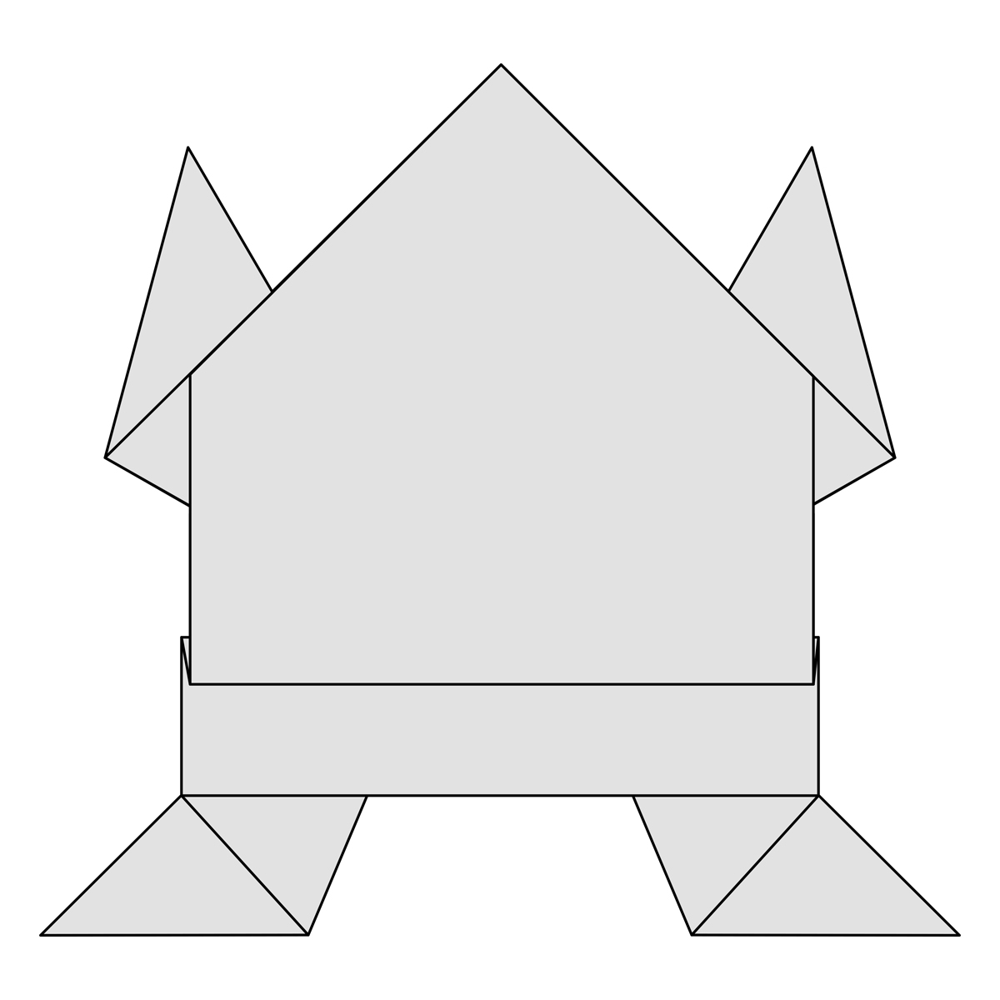

Let's Explore some Origami

Intresting Facts about Camel
- 1> Camels ears are furry
- 2> Camels can move easily across sand because of its specially designed feet
- 3> When they find water they drink as much as possible
- To know more how to create camel click on the pic

Intresting Facts about Chameleons
- 1> Chameleons are reptiles that are part of the iguana suborder
- 2> Changing skin color is an important part of communication among chameleons
- 3> Most chameleons have a prehensile tail that they use to wrap around tree branches
- To know more how to create Chameleons click on the pic

Intresting Facts about Pigeon
- 1> Pigeons are incredibly complex and intelligent animals
- 2> Pigeons are reowned for their oustanding navigational abilities
- 3> Pigeons have excellent hearing abilities.
- To know more how to create Pigeon click on the pic

Intresting Facts about Pandas
- 1> An adult panda can eat 12-38 kilos of bamboo per day!
- 2> Pandas have carnivorous teeth , but they eat bamboo and fruits
- 3> Prehistoric pandas lived upto 2 million years ago
- To know more how to create Pigeon click on the pic

Intresting Facts about Pandas
- 1> A group of frogs is called an army
- 2> Frogs drink water through their skin
- 3> The world's largest frog species is known as the 'Goliath Frog'
- To know more how to create Pigeon click on the pic